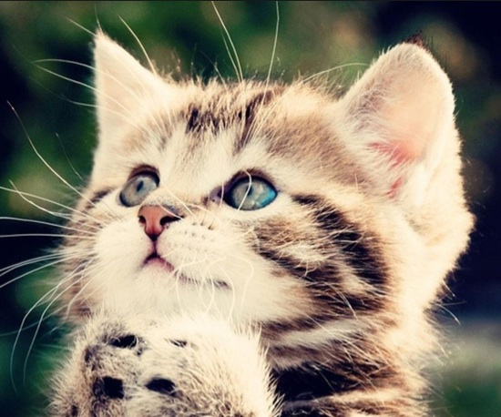
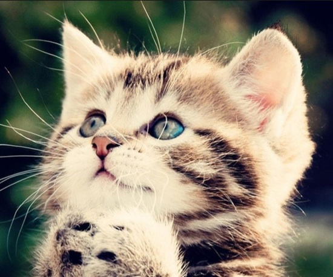

Kittens
A kitten (also known as a kitty or kitty cat) is a juvenile cat. After being born, kittens are totally dependent on their mother for survival and they do not normally open their eyes until after seven to ten days.
After about two weeks, kittens quickly develop and begin to explore the world outside the nest. After a further three to four weeks, they begin to eat solid food and grow adult teeth. Domestic kittens are highly social animals and enjoy human companionship.
Source: Wikipedia
 
